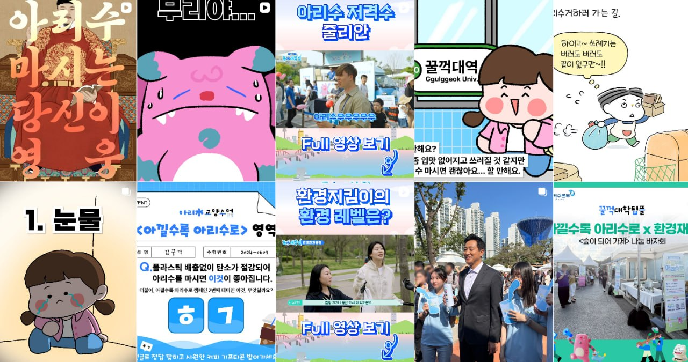
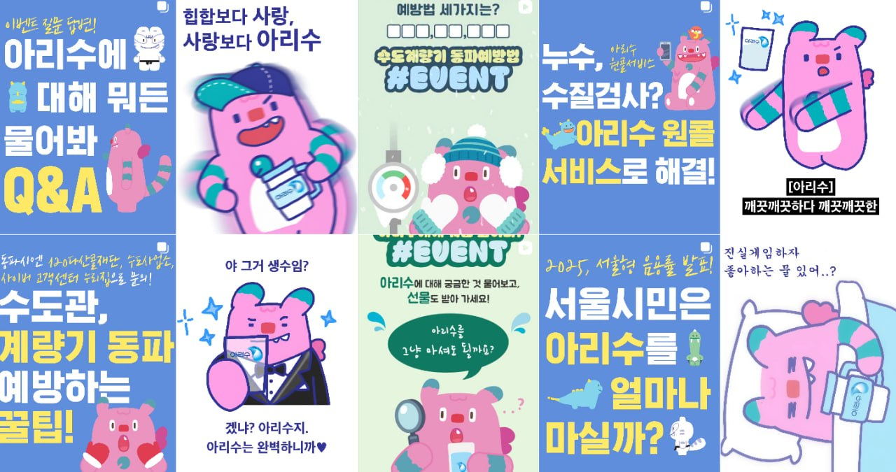
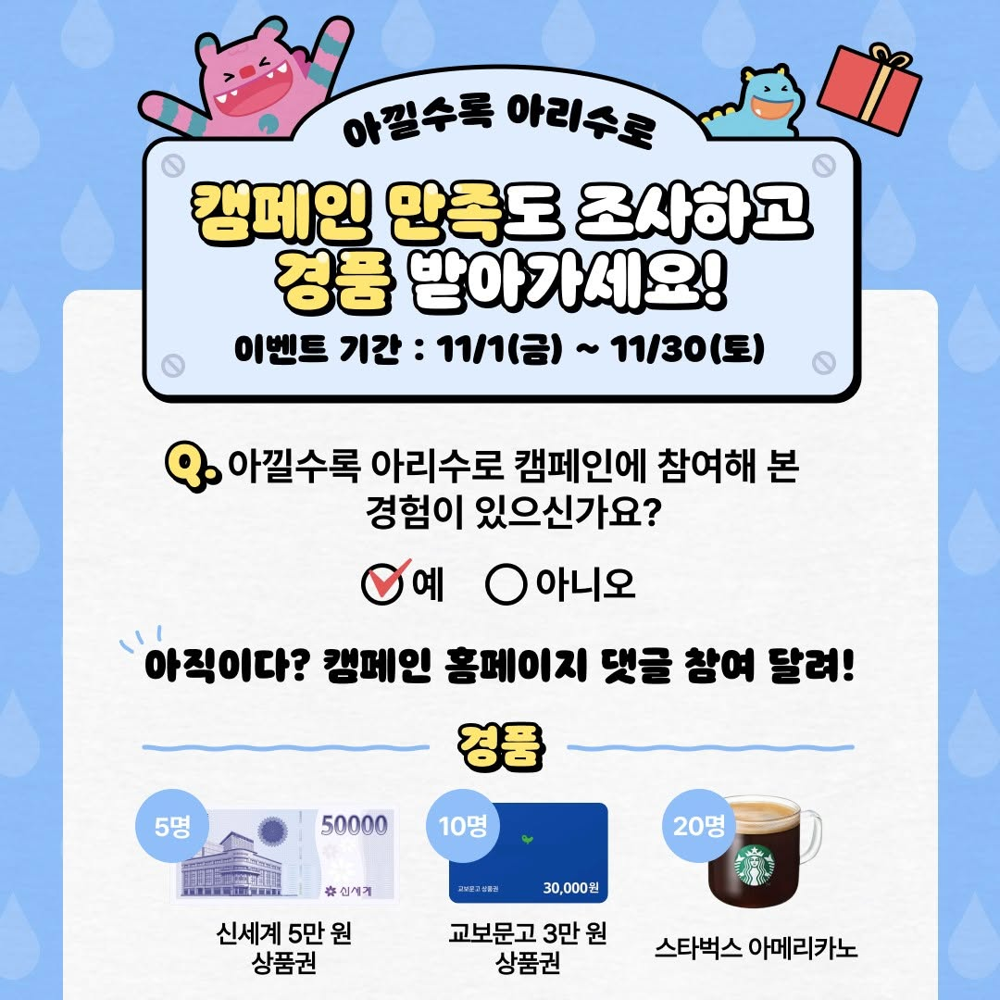

공공기관 콘텐츠, 수동적·일방적 톤만 바꿔도 참여도가 올라간다
같은 채널, 다른 콘텐츠 톤 — 예산 20% 줄이고 인터랙션 4.4×, 댓글 10×
Context
서울시 수돗물 아리수에 대한 신뢰도를 높여 음용률을 높이는 게 목적.
그러나 채널의 톤과 레이아웃이 분산되어 정보 전달과 이미지 개선이 모호 했다.
Insight
보기 편하게 만들어야 콘텐츠를 보게 되고, 서로 주고받는 콘텐츠여야 관심을 가지게 된다.
Action
- 비주얼 통일 — 인스타 채널의 톤 · 레이아웃 · 컬러를 표준화하고 발행 주기를 설정해 피드를 정돈.
- 양방향 톤 설정 — 시민 질문 · 답변 기반 참여형 포맷을 도입해 지루할 수 있는 정보 자체에 관심을 갖게 만든다.
Result
Comments
9.97×
이벤트 콘텐츠 댓글수117 → 1,167
Survey
6.0×
만족도 조사 응답자1,000 → 6,000명
Engagement
2.85×
이벤트 콘텐츠 공감수373 → 1,064
01-1
인스타그램 피드 재정의
Visual Identity

- 콘텐츠 유형 · 비주얼 톤 혼재
AFTER
- 콘텐츠 카테고리 분류 (정보성 · 이벤트성 · 홍보성) 및 업로드 주기 정리

01-2
이벤트 포맷 전환 — 참여 전환 구조 고도화
Format Pivot
Performance예산 −20% 절감 · 인터랙션 4.4× 증가 (524 → 2,318) · 인터랙션당 비용 5.5× 효율 개선 (1,193 원 → 216 원).
공감
×2.85
→댓글
×9.97
→공유
×2.56
→BEFORE 경품 예산
625,000 원
- LG 가습기 300,000 원 · 1명
- 신세계 이마트 30,000 원권 · 5명 (150,000 원)
- 스타벅스 아메리카노 T 기프티콘 · 35명 (≈175,000 원)
−20%
예산
AFTER 이벤트 예산
500,000 원
- 네이버 포인트 10,000 원권 · 50명
01-3
만족도 조사 — 후킹 카피 + 다중 진입 동선 설계
Conversion Design
전년 대비 응답 증가
6×
전년 대비 응답자 6배 증가(1,000명 → 6,000명)
Strategy
행정 톤 → 후킹 메시지 + 다중 진입 동선
-
강력한 후킹 카피 전면 배치"상품권 100명 쏜다!" 등 행정형 설명 대신 참여 동기 극대화 메시지
-
다중 진입 동선 설계이미지 내 QR · 프로필 링크트리 · 스토리 링크 — 3개 채널 연동
-
Instagram 링크 제약 우회게시글에 외부 링크 불가한 플랫폼 제약 — 인입 경로 다각화로 해결
BEFORE
기존 만족도 조사 캠페인

AFTER

재설계된 아리수 SNS 만족도 조사 ↗
01-4
블로그 통합 동선 설계 — 콘텐츠 허브화
Content Hub
블로그를 단순 게시 공간이 아닌 콘텐츠 허브로 활용.
주요 카테고리와 SNS 채널을 유기적으로 연결하는 UI 구조 개선안을 기획.
사용자의 탐색 부담을 줄이고 콘텐츠 소비 흐름을 강화하는 데 초점.
 01
02
03
04
01
02
03
04
-
인기 콘텐츠 영역주요 블로그글 바로가기 링크 연동
-
YouTube / Instagram 주요 글영상 · SNS 콘텐츠를 블로그에서 그대로 소비
-
SNS 채널 바로가기 아이콘홈 · 인스타 · 네이버 채널 · 페이스북 원클릭 이동
-
블로그 주요 카테고리 아이콘아리수 어때요 · 아리수 월드 · 아리수 TV · 이벤트 · 캠페인